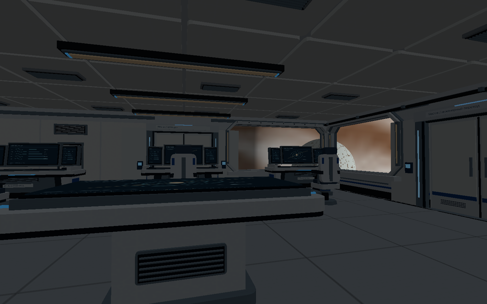
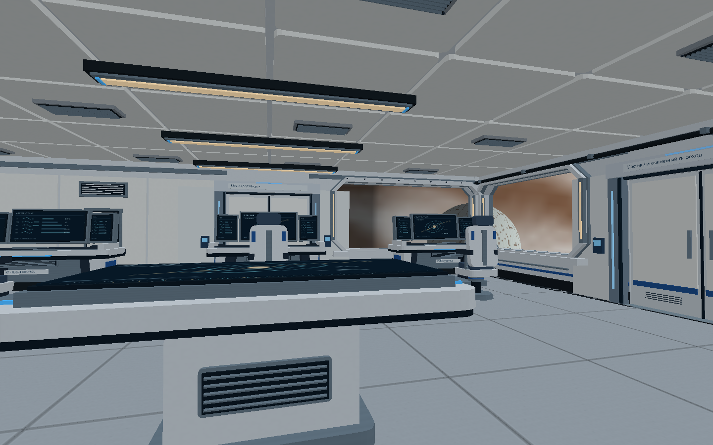
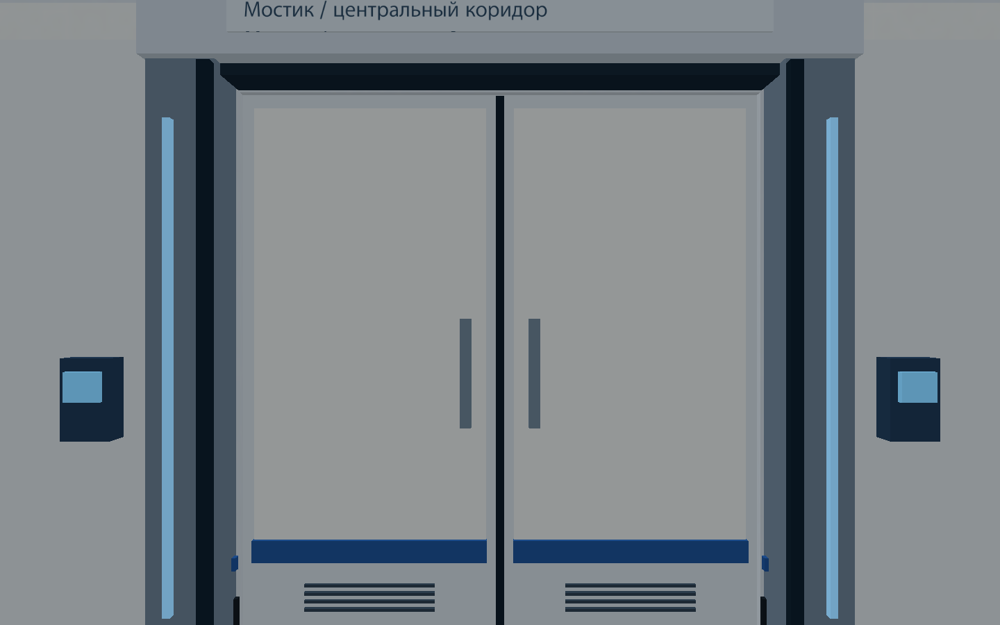
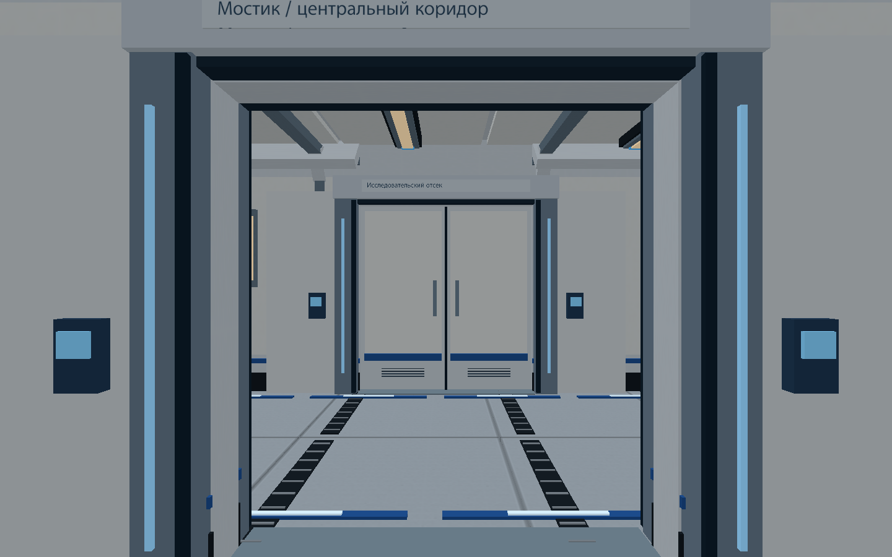
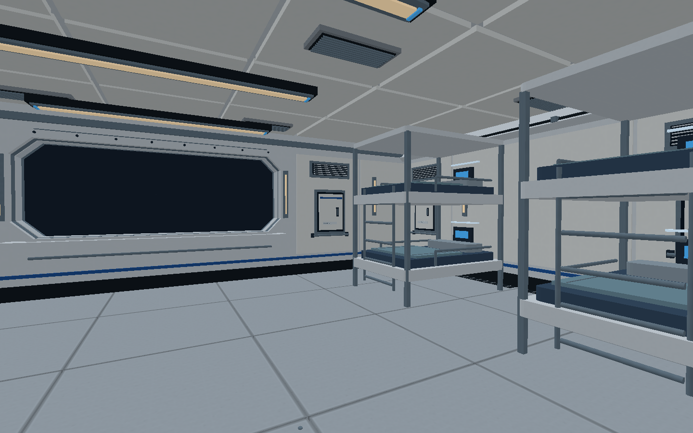
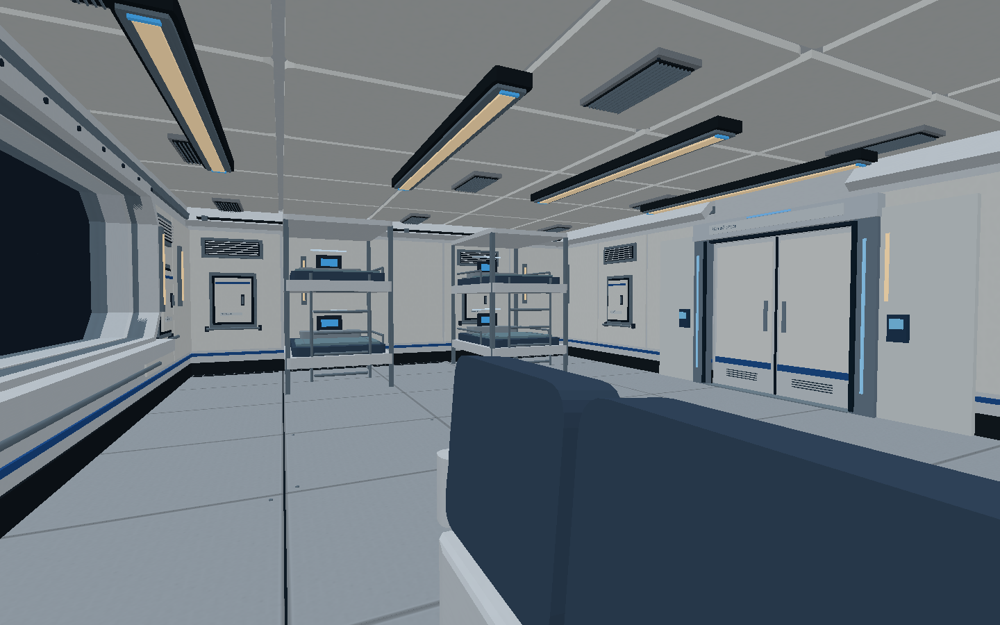
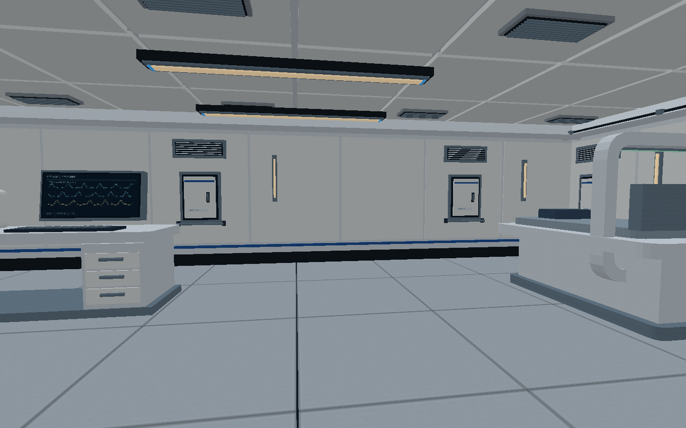
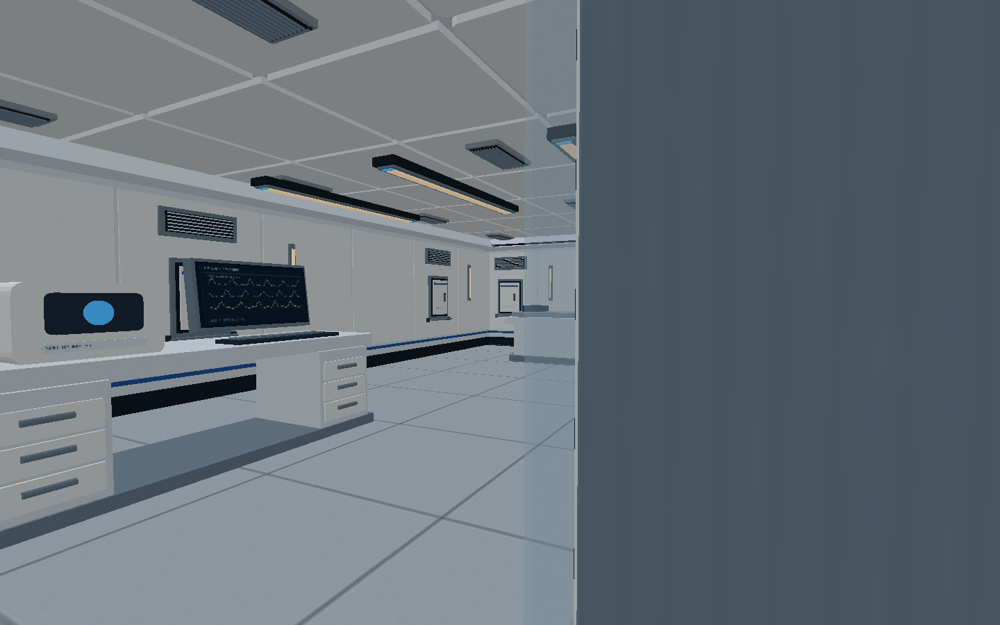
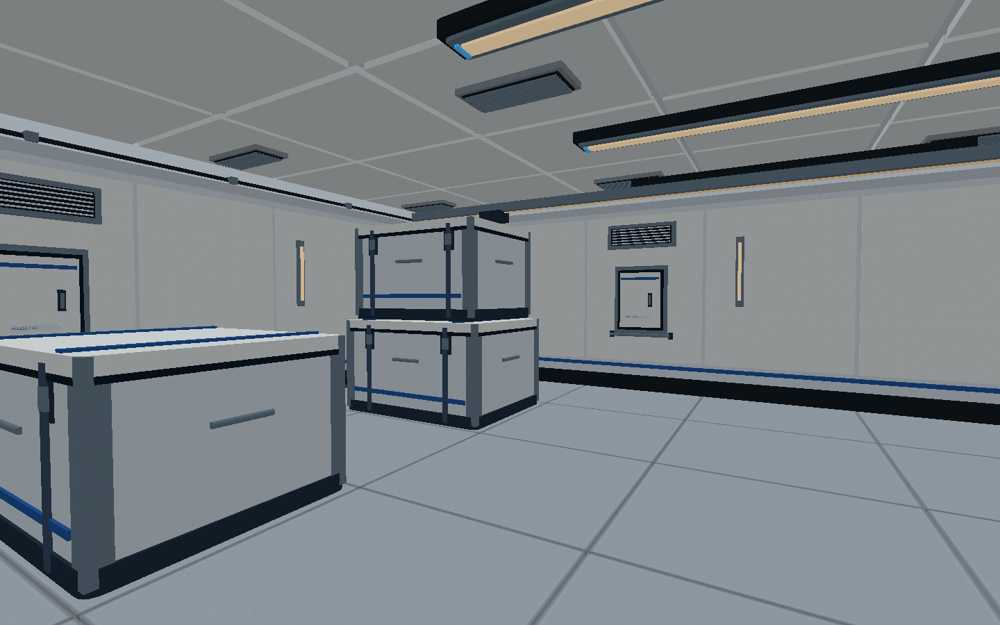
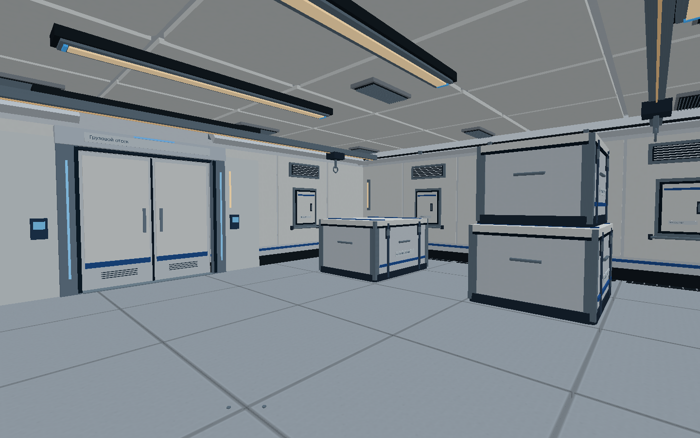

Мостик
Консоли, навигационный стол, кресла, окно и потолочные панели.
1 ноября 2026 · семь отсеков · двенадцать управляемых дверей
Результаты — офлайн-кадры настоящих ресурсов игры через SoftwareRenderer. Это не скриншоты браузера; аппаратные тени, отражения и WebGL FPS здесь не проверены. Откройте изображение для просмотра в полном размере.
Отчёт, запуск и ограничения · Замер загрузки · CPU-рендер · Маршрут и кеш
Один и тот же мостик после переключения света. Переключатель управляет освещением и лампами; выбор сохраняется в браузере.


Консоли, навигационный стол, кресла, окно и потолочные панели.
Кольца, остекление, трубопроводы и доступ к посту инженера.
Три ряда гидропоники, листья, полив и подвесные светильники.
Три капсулы с остеклением, медицинские терминалы и шкафы.
Непрерывные пол, стены и потолок; решётки, рамы и закрытые двери.
Многослойные рамы, прозрачный проём и Юпитер с Европой. Угловые щели закрыты корпусом.








Старая схема используется как референс. В игре сохранена актуальная карта из семи помещений.


Микродетали, растительность и процедурные планеты проще концептов. Фотореалистическое совпадение не заявляется.